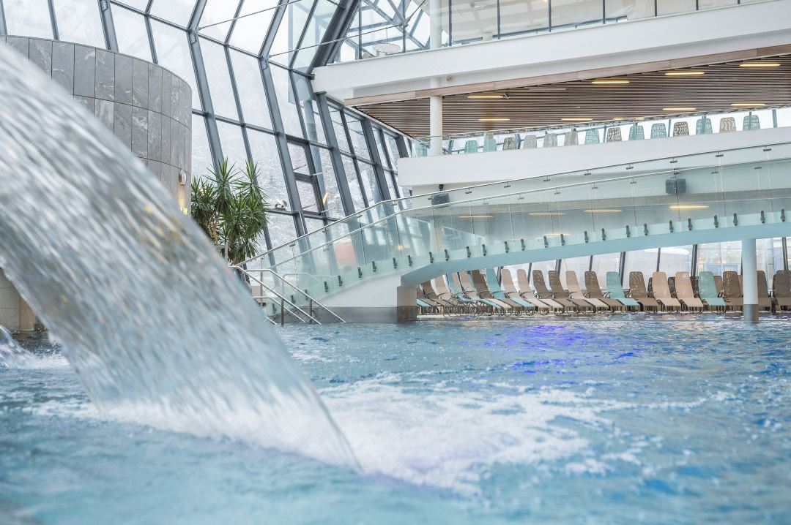
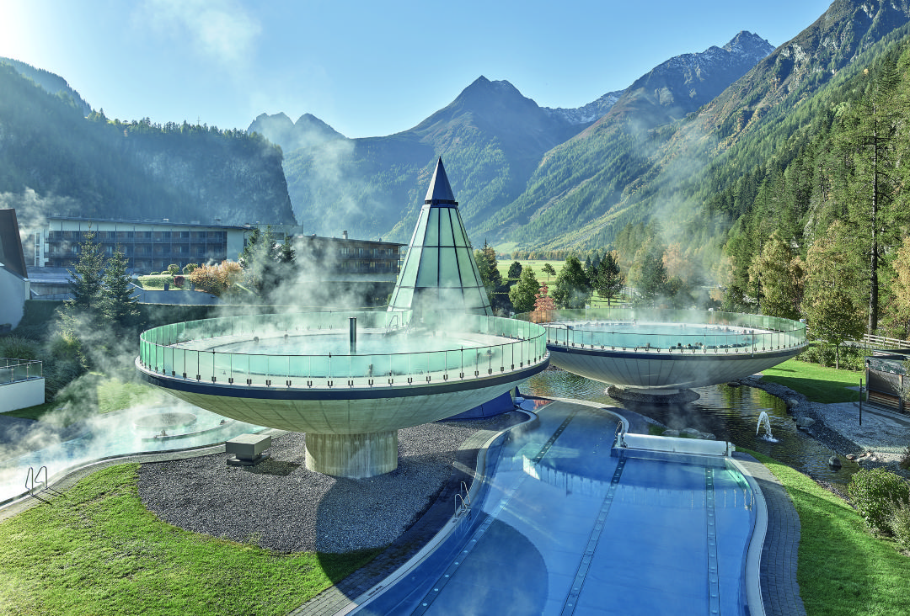
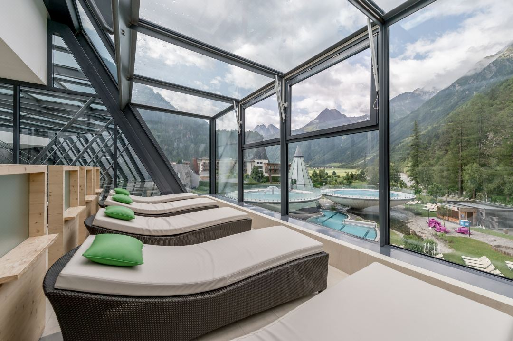
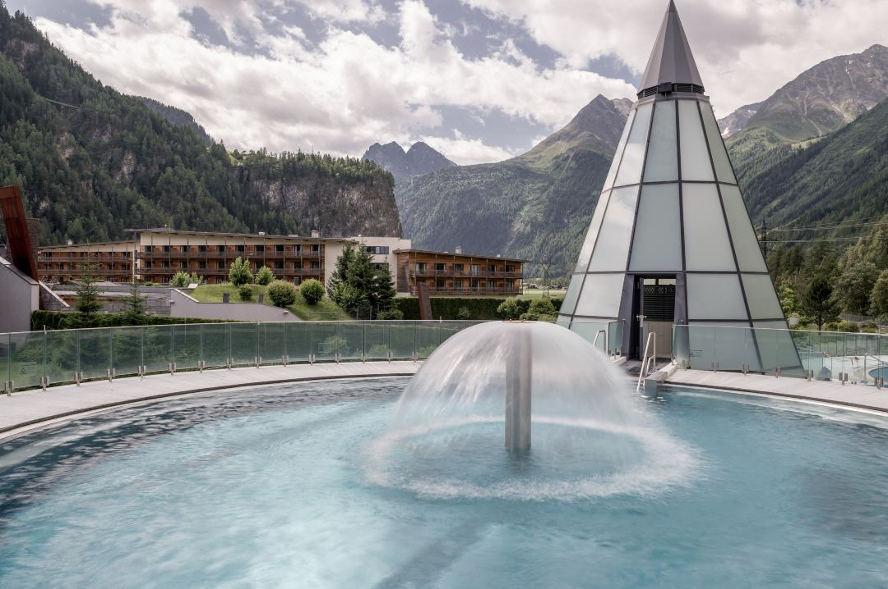
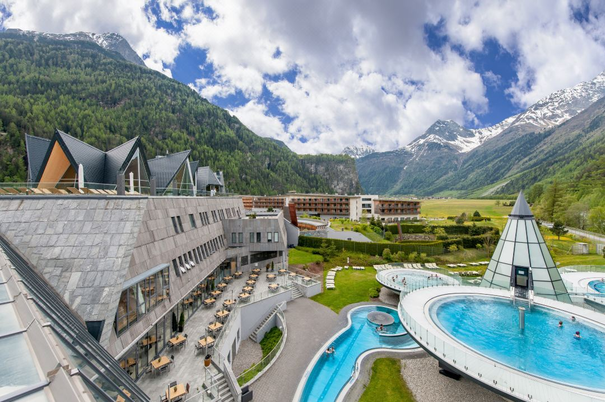
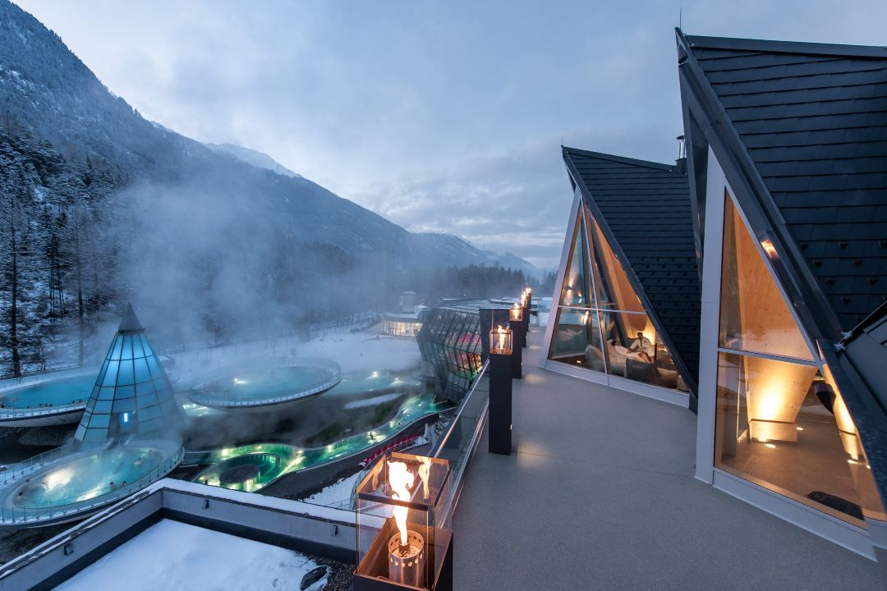

The Aqua Dome 4 Sterne Superior Hotel & Tirol Therme Längenfeld is a luxurious 4-star superior hotel; It
offers
spectacular views of the Ötztal Alps, spacious and elegant rooms, as well as the only thermal spring in
Western
Austria.
The hotel's spectacular architecture blends harmoniously with its natural surroundings. The hotel's large
wellness area, which guests can use for free, offers 20,000 m2 of spa indulgences.
The outdoor spa area, large sunbathing lawn, saunas, beauty treatments, gym, as well as the Alpen Arche Noah
area for children and families, provide many options for bathing and leisure activities.
The restaurants serve regional and international cuisine, as well as healthy dishes, all in a stylish
atmosphere. Drinks are served in the lounge, bar and cozy wine bar, which features an open fireplace and
leather
sofas.
The hotel offers a separate water park for children and families, with 2 large pools and a huge water slide.
In
addition, families will be able to have fun in the playrooms.





